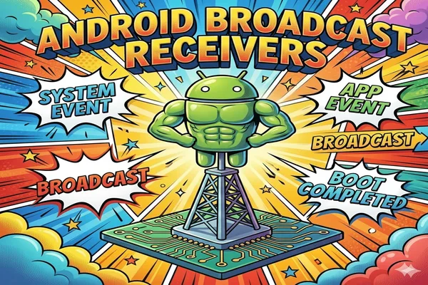
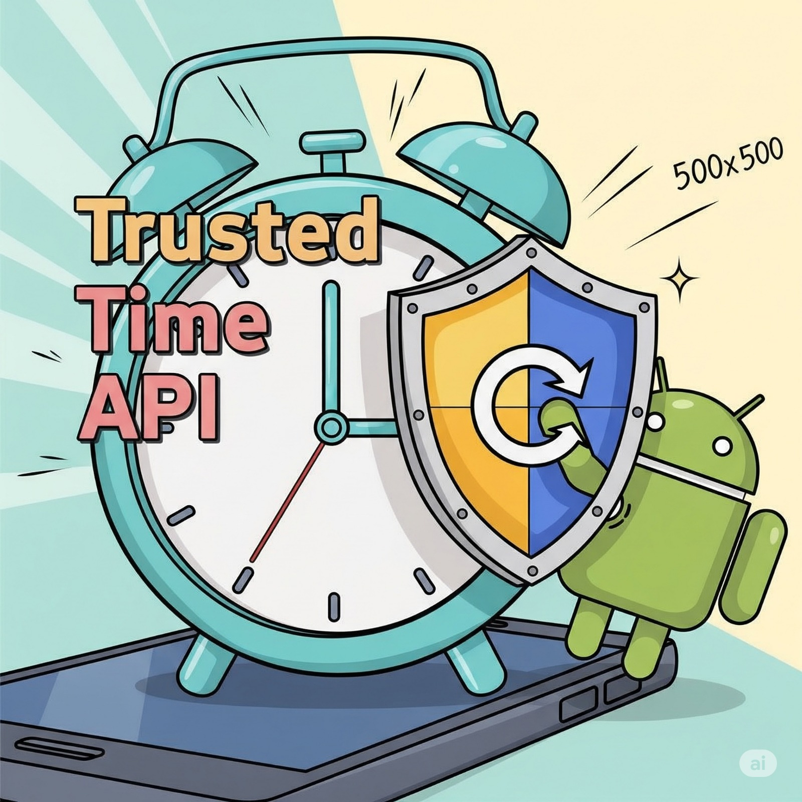

Mert Yiğit
Android geliştiricisiyim, yaratıcı mobil uygulamalar yapıyorum.
Yeni fırsatlara ve tekliflere açığım.
Projelerim
Kullandığım Teknolojiler
Kotlin
Jetpack Libraries
Jetpack Compose
XML
MVVM
Git
Firebase
Room
Blog Yazılarım

Android BroadcastReceiver: Temeller, Modern Kısıtlamalar ve En İyi Pratikler
Android Studio'da API Testi Artık Daha Kolay: HTTP Client Plugin
